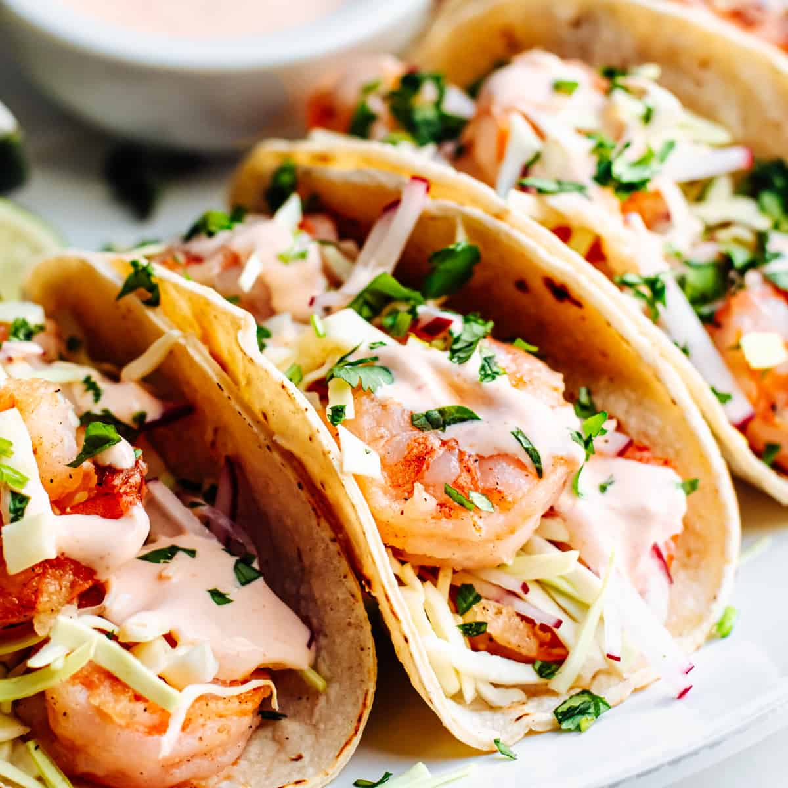

Cilantro Lime Shrimp Tacos

These tangy Cilatnro Lime Shrimp Tacos are melt in your mouth good, and almost as good for you.
It doesn't take a world renowned chef to make these easy Cilantro Lime Shrimp Tacos. A simple marinade, four ingredient tangy slaw, and a little southwest ranch make these the easiest and healthiest tacos you'll ever have.
Ingredients
Marinade
- 1/4 c. fresh lime juice
- 2 tbsp. chopped cilantro
- 2 cloves minced garlic
- 1/2 tsp. cumin
- 1 tbsp. avocado oil
- zest of 1 lime
- kosher salt to taste
Tangy Slaw
- 1 c. shredded green cabbage or coleslaw mix
- 1/4 c. chopped cilantro
- 1/4 c. thinly sliced red onion
- 1/2 thinly sliced avocado
- juice of 1 lime
- 1 tbsp. avocado oil
- kosher salt to taste
Tacos
- 1 lb. peeled and deveined shrimp
- 8 corn tortillas warmed for serving
- your favorite salsa or southwest style dressing
Steps:
- In a large bowl, whisk together lime juice, cilantro, garlic, cumin, avocado oil, lime zest, and season with salt. Add shrimp and cover with plastic wrap. Let marinate 20 minutes in the refrigerator.
- Make slaw: in a large bowl combine all slaw ingredients. Toss gently to combine and seaons with salt.
- Preheat grill or grill pan to medium heat. Grill shrimp until pink and opaque, about 2 to 3 minutes per side.
- Build tacos with warm tortillas, shrimp, slaw, and dress to your liking.
- Enjoy!